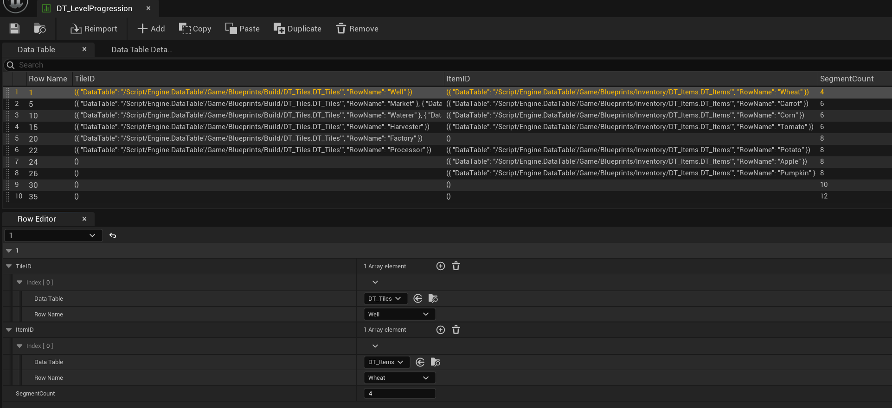

Farm Prototype
Solo Project
Engine: Unreal Engine 5
Duration: 4 Weeks
A prototype exploring farming & resource management systems.
I got to tackle a lot of UI and interacting systems.
Made for a System Design course at Futuregames.
Prototype Features:
Inventory system
Level progression system
Fortune wheel
Farming system
Build system
Automation with AI helpers
Upgrade system for the AI

DETAILS
Tile types
I used inheritance for the tiles and created a base tile blueprint class that implements a Interact interface.
-
Crop Tile: Grows a crop overtime, requiring water.
Interact to water or harvest.
-
Well Tile: Contains unlimited water.
Interact provides water.
-
Storage Tile: Can store items.
Interact toggles showing the storages inventory menu.
-
Market Tile: Sell items.
Interact toggles the market menu.
-
Factory Tile: Turns crops into processed items.
Interact to harvest or toggles the inventory menu to submit crop.
-
AI Spawn Tile: Spawns an AI helper.
Interact toggles the upgrade menu.
Inventory System
Used an actor component for the Inventory so easy to reuse. The UI has drag and drop functionality to move and combind item stacks.
Build System

Leveling System
I recreated the leveling system from a childhood game I played a lot, Nordgame. You put crops into a fortune wheel that gave exp on win.
Key design points:
6 item slots requesting specific items
X2 slot that gives double exp when landed on, if all item slots have been filled.
Wheel can be played with 1 item minimum.
All added items get used up after spinning.
I scale the number of item slots required with level.
To gradually slow down the wheel I used a float curve as alpha to lerp the rotation speed multiplier until it reached 0.
To make the slot it landed on unpredictable I used;
Multiple curves, picking a random one
Randomized the spin duration within a range
Randomized the starting speed multiplier within a range
Wheel content
I can use the items the wheel requires to incentivize the player to get new crops and tiles. I went through a couple iterations for deciding the item slots content.
Full control: Creating each wheel’s item slots manually. Gives complete control over the progression and difficulty but time consuming.
No control: Fill the item slots with random items from an item poo. When new items get unlocked, they get added to the pool. Quick but inconsistent and impossible to balance.
I kept the item pool but wanted more control over it. I made a data table that specifies what items are in the potential pool at any given level. This allowed increasing the likelyhood of an item appearing by entering more copies of it.
Level Progression
I use a data table to determine what tiles and crops get unlocked at certain levels. Row name corresponds to level. Instead of using a name or text variable type I use a data table row handler to minimize user error of typing an ID wrong.

AI helpers
A fun part of farming and resource management games is automating tasks so production can scale up. I decided on some AI helpers that automate different parts of the game.
Waterer AI: Waters crop tiles
Harvester AI: Harvests crop tiles
Processor AI: Supplier Factory tiles with items to processes
I use a simple state machine for the AI. As they share the same overarching states, I utilize inheritance and made a base AI class with the core loop.
Base AI
The AI have a primary and a secondary objective. If neither can be run, the AI moves home.
Primary Objective:
Performed when the AI's specified criteria is fulfilled.
When setting target; the AI marks the target tile as taken so other AIs ignore it.
Secondary Objective:
Performed to fulfill the criteria.

Early progress
I made the Watering and Harvesting AI first.
To simplify debugging I added text to display the AI's current target and resource count. The tiles also got text to display their state.
Adjustments
Nerfed movement speed.
A diegetic indicator on the mesh to display resource count.


Test
Larger testing scenario, more AI. The AI behaves as it should.
Problem: lack of visual clarity and an overwhelming amount of information.
Solution: hide the AI's text, the diegetic resource indicator communicates enough.
Processing AI
Delivers crop items from storage tiles to factory tiles.

TAKE AWAYS
A fun little project with a mechanic (fortune wheel) I've wanted to recreate for a long time. I also adore my little AI helpers, they turned out great. I got to do a lot of UI and technical implementation.
Technical designer
Utilized actor components for the games system, made referencing them in UI easy.
Learned to make a solid inventory system.
Implementing a simple debug menu.
Learned how to implement Drag and drop.
AI state machine.